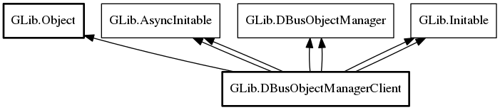

DBusObjectManagerClient
Object Hierarchy:
Description:
public class DBusObjectManagerClient : Object, AsyncInitable, DBusObjectManager, Initable, AsyncInitable, DBusObjectManager, Initable
DBusObjectManagerClient is used to create, monitor and delete object proxies for remote objects exported by a DBusObjectManagerServer (or any code implementing the org.freedesktop.DBus.ObjectManager interface).
Once an instance of this type has been created, you can connect to the object_added and object_removed signals and inspect the DBusObjectProxy objects returned by get_objects.
If the name for a DBusObjectManagerClient is not owned by anyone at object construction time, the default behavior is to request the message bus to launch an owner for the name. This behavior can be disabled using the g_dbus_object_manager_client_flags_do_not_auto_start flag. It's also worth noting that this only works if the name of interest is activatable in the first place. E.g. in some cases it is not possible to launch an owner for the requested name. In this case, DBusObjectManagerClient object construction still succeeds but there will be no object proxies (e.g. get_objects returns the empty list) and the name_owner property is null.
The owner of the requested name can come and go (for example consider a system service being restarted) – DBusObjectManagerClient handles this case too; simply connect to the notify signal to watch for changes on the name_owner property. When the name owner vanishes, the behavior is that name_owner is set to null (this includes emission of the notify signal) and then object_removed signals are synthesized for all currently existing object proxies. Since name_owner is null when this happens, you can use this information to disambiguate a synthesized signal from a genuine signal caused by object removal on the remote DBusObjectManager . Similarly, when a new name owner appears, object_added signals are synthesized while name_owner is still null. Only when all object proxies have been added, the name_owner is set to the new name owner (this includes emission of the notify signal). Furthermore, you are guaranteed that name_owner will alternate between a name owner (e.g. `:1.42`) and null even in the case where the name of interest is atomically replaced
Ultimately, DBusObjectManagerClient is used to obtain DBusProxy
instances. All signals (including the org.freedesktop.DBus.Properties:GDBusObjectManagerClient:PropertiesChanged signal)
delivered to DBusProxy instances are guaranteed to originate from the name owner. This
guarantee along with the behavior described above, means that certain race conditions including the "half the proxy is from the old owner
and the other half is from the new owner" problem cannot happen.
To avoid having the application connect to signals on the returned DBusObjectProxy and DBusProxy objects, the interface_added, interface_removed, g_properties_changed and g_signal signals are also emitted on the DBusObjectManagerClient instance managing these objects. The signals emitted are interface_added, interface_removed, interface_proxy_properties_changed and interface_proxy_signal.
Note that all callbacks and signals are emitted in the thread-default main context that the DBusObjectManagerClient object was constructed in. Additionally, the DBusObjectProxy and DBusProxy objects originating from the DBusObjectManagerClient object will be created in the same context and, consequently, will deliver signals in the same main loop.
Namespace: GLib
Package: gio-2.0
Content:
Properties:
Static methods:
Creation methods:
Methods:
Signals:
Inherited Members:
All known members inherited from class GLib.Object

All known members inherited from interface GLib.AsyncInitable
All known members inherited from interface GLib.DBusObjectManager
All known members inherited from interface GLib.Initable